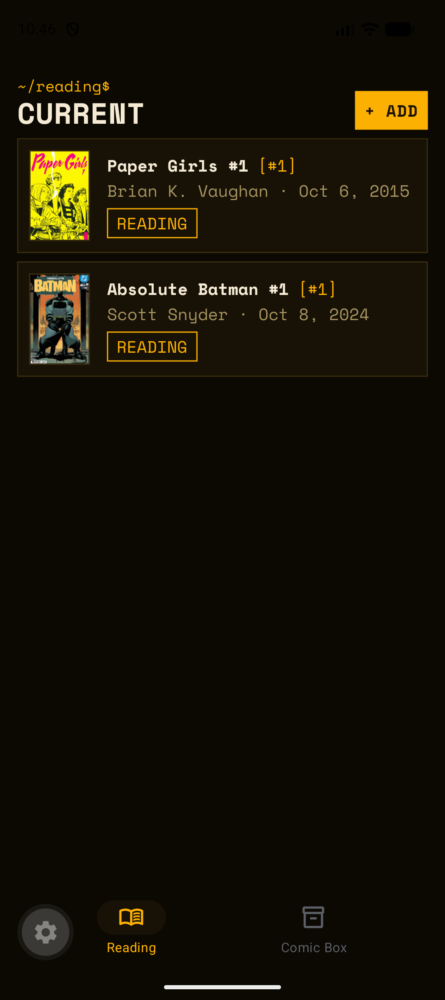
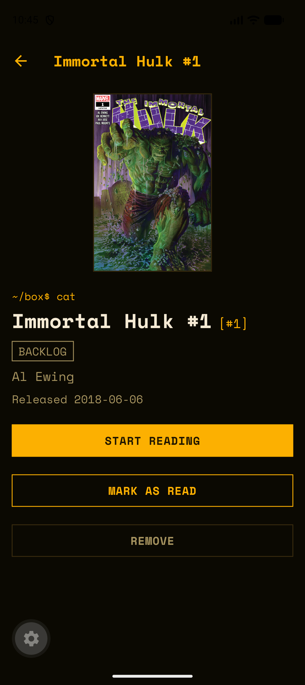
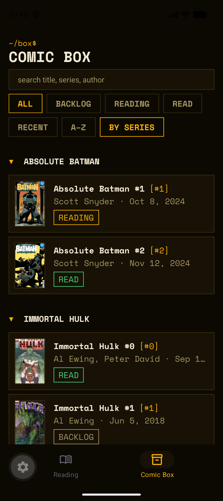
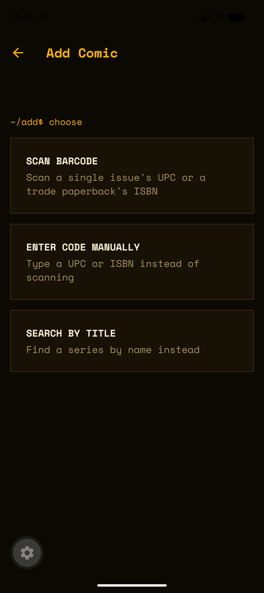

Longbox is a personal comic-reading tracker for Android and iOS. Scan a barcode or search by title to file a comic in your backlog, then move it through reading and read — pulling real issue data (cover, release date, issue number) from a live comic database instead of a spreadsheet you forget to update.




Scan a barcode (UPC for single issues, ISBN for trade paperbacks), enter a code manually, or search by title. Every path lands on a confirm screen before anything's saved.
Owning a comic and having read it are different facts. New adds land in the Backlog; Current Reading stays honest about what's actually in your hands right now.
Checks the API for a real next issue first. Found one? You're asked whether to add it to your backlog. Either way, the current issue moves to Read.
The whole collection in one place — filter by Backlog, Reading, or Read, search it, and sort three ways (Recent, A–Z, a collapsible By Series grouping).
tracked_comics table, a thin repository module for all reads/writes.CameraView targeting ean13/ean8/upc_a/upc_e symbologies.
Requires a free Metron account for the two
EXPO_PUBLIC_METRON_* variables. OpenLibrary needs no credentials. Barcode
scanning needs a physical device with a camera — the simulator/emulator can exercise every
other flow (search, manual entry, moving comics between states, the Comic Box).